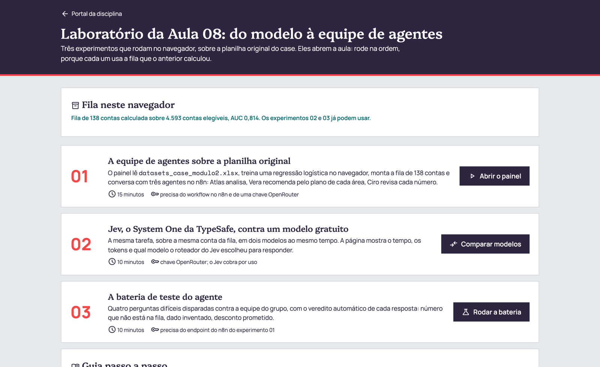

4.593
contas elegíveis, com compra até 2024-02
0,814
AUC fora da amostra, calculada no navegador
138
contas na fila do ciclo
3
agentes que respondem sobre a fila
Nada para instalar: o painel lê datasets_case_modulo2.xlsx como chegou e treina o modelo dentro do navegador.
Hoje cada grupo sai com um painel publicado na internet e uma equipe de agentes que responde sobre a fila.
Fonte: dados/analise_aula08.py, sobre a base longa do case.
| Momento | Duração | O que acontece |
|---|---|---|
| Abertura | 20 min | os três experimentos do laboratório, projetados pelo professor |
| Trilha | 100 min | os dez passos do guia, em grupo; o professor circula pelas mesas |
| Checkpoint | 20 min | cada grupo abre o painel publicado e roda a bateria ao vivo |
| Contrato | toda a aula | nenhum número sem origem na fila, e nenhuma chave ou planilha fora do lugar |

Os três rodam sobre a planilha original, e a planilha não sai do navegador.

Mesmo cálculo em Python e em JavaScript: um teste compara os dois conta a conta.
Fonte: dados/analise_aula08.py e painel/modelo.js.
| Coluna | O que mede, até 2024-02 |
|---|---|
meses_desde_ultima_compra | recência |
meses_com_compra_12m | frequência no último ano |
log_receita_12m | valor no último ano, em escala logarítmica |
razao_receita_12m | último ano dividido pelo anterior |
receita_12m_sobre_pico | último ano como fração do melhor ano |
meses_de_casa | tempo desde a primeira compra |
Compra depois de 7 de março só existe em conta não perdida. Usá-la vazaria o rótulo para dentro das colunas.

Cada agente é um nó AI Agent com o próprio modelo. O painel escolhe qual modelo os três usam.
| Primeira conta da fila | Nemotron 3 Super, gratuito | Jev Router, TypeSafe |
|---|---|---|
| Tempo, três agentes | 16 s | 12 s |
| Modelo que respondeu | o próprio Nemotron | deepseek/deepseek-v4.1-flash |
| Atlas trouxe os números | não | sim |
| Veredito do Ciro | "corrigido", com motivo que aprova | "aprovado", com motivo coerente |
O Jev Router, da TypeSafe, escolhe qual modelo responde e cobra por uso.
Fonte: execução de demonstração no n8n do Inteli, 03/10/2026.
| Passo | O que fazer | Quem | Prova |
|---|---|---|---|
| 1 | rodar o painel pronto com a planilha | cada pessoa | AUC de 0,814 na tela |
| 2 e 3 | criar a chave gratuita e guardar no n8n | cada pessoa | credencial na lista |
| 4 | importar a equipe de agentes | uma pessoa | workflow publicado |
| 5 | conectar o painel e escrever os planos | o grupo | resposta com selo do Ciro |
| 6 e 7 | rodar a bateria e comparar com o Jev | o grupo | placar e teste_agente.md |
| 8 e 9 | clonar e modificar a interface no Antigravity | o grupo | mudança no localhost |
| 10 | publicar no GitHub Pages | uma pessoa | URL aberta em outra máquina |
Cada passo do guia termina num quadro que diz como saber que deu certo. Só avance quando ele confere.
20
minutos
- Formato
- Cada pessoa
- Entrega
- A credencial OpenRouter salva no n8n
- Checkpoint
- Cada pessoa vê a AUC de 0,814 no painel e a credencial na lista do n8n
Abra o painel no laboratório e arraste datasets_case_modulo2.xlsx.
A base longa, de cerca de 68 MB. A versão de 24 MB começa depois do corte e o painel avisa.
Em openrouter.ai/settings/keys, crie a chave kovan-NOME_DO_GRUPO.
Entrar com Google ou GitHub, sem cartão. A chave aparece uma vez só.
No n8n, Credentials, Create credential, OpenRouter: cole em API Key e salve.
A chave não passa por chat, e-mail nem arquivo.
A chave existe só no OpenRouter e na credencial do n8n

O workflow guarda só o nome da credencial, então o arquivo pode circular sem expor a chave.
Fonte: openrouter.ai/docs, página de limites, consultada em 03/10/2026.
10
minutos
- Formato
- Uma pessoa por grupo
- Entrega
- A Production URL do nó API do painel
- Checkpoint
- Nenhum nó com alerta vermelho e o workflow publicado
No painel, bloco 03, baixe o workflow. No n8n, Create workflow, menu ..., Import from File.
O arquivo traz os três agentes e não traz dado nenhum.
No nó API do painel, troque NOME_DO_GRUPO no Path.
Nome igual ao de outro grupo derruba a equipe dos dois.
Escolha a credencial em Modelo do Atlas, da Vera e do Ciro. Salve e clique em Publish.
Depois copie a Production URL do nó API do painel. A Test URL responde 404 ao painel.
A URL termina em /webhook/kovan-chat-NOME_DO_GRUPO

| Regra no prompt | Agente |
|---|---|
| todo número sai da fila | os três |
| não recomendar ação | Atlas |
| só itens dos planos, com área e coluna | Vera |
| citar todas as áreas que se aplicam | Vera |
| conferir número a número e dar veredito | Ciro |
Antes de mudar um prompt, leia os três. A regra de um pressupõe o trabalho do outro.
| Área | Item escrito com limiar | Coluna da fila |
|---|---|---|
| Comercial | valor esperado acima de USD 500 mil: ligação em até 5 dias úteis | valor_esperado_usd |
| Atendimento | 4 meses ou mais sem compra: contato para verificar chamados | meses_desde_ultima_compra |
| Pós-vendas | 3 meses ou menos com compra em 12: revisão técnica do parque | meses_com_compra_nos_ultimos_12 |
Plano escrito como intenção vira paráfrase. Plano com limiar vira regra que o Ciro consegue conferir.
15
minutos
- Formato
- O grupo inteiro
- Entrega
- Uma resposta da equipe com o selo do Ciro
- Checkpoint
- Cada ação cita área, item e coluna, com o valor
No bloco 03 do painel, cole a Production URL e clique em Testar conexão.
A equipe leva alguns segundos: são três chamadas ao modelo.
No bloco 02, escreva o plano das três áreas, com limiar em cada item.
Os textos da tela são exemplos. O plano do grupo é o que vai para a banca.
No bloco 04, clique numa conta da fila e pergunte qual área deve agir.
Leia as três mensagens antes da final. O erro costuma aparecer no Atlas.
Os três agentes respondem e o Ciro aprova ou corrige com motivo

A conferência automática aponta onde olhar. O veredito do grupo continua sendo a leitura humana.
Fonte: execução de demonstração no n8n do Inteli, 03/10/2026.
20
minutos
- Formato
- O grupo inteiro
- Entrega
teste_agente.mdcom o placar e uma mudança- Checkpoint
- Cada mesa mostra uma reprovação e o que mudou para virar aprovação
No laboratório, experimento 03, clique em Rodar as quatro perguntas.
A bateria gasta 12 das 50 requisições do dia no plano gratuito.
Para cada reprovação, mude uma coisa só, prompt ou modelo, e rode de novo.
Duas mudanças de uma vez impedem saber qual resolveu.
No experimento 02, rode a mesma conta no gratuito e no Jev.
Sem crédito, o Jev devolve erro. Acompanhe então a demonstração do professor.
Placar registrado e a mudança que virou o veredito
5
minutos
- Formato
- Uma pessoa por grupo
- Entrega
- O painel abrindo em localhost:8000
- Checkpoint
- O painel local aceita a planilha e chega à AUC de 0,814
Abra o Antigravity numa pasta vazia e cole o primeiro prompt.
Clone o repositório https://github.com/josercf/inteli-pos-2026-2a-eda nesta pasta. Se ele já estiver clonado, rode git pull. Depois abra a pasta frontend, liste os arquivos e explique em uma linha o papel de cada um. Não altere nada ainda.
Cole o segundo prompt e abra o endereço que ele devolver.
Dentro da pasta frontend, suba um servidor local com python3 -m http.server 8000 e me diga o endereço para abrir no navegador. Deixe o servidor rodando.
O mesmo painel, agora na pasta do grupo
30
minutos
- Formato
- O grupo inteiro
- Entrega
- Pelo menos uma mudança funcionando no localhost
- Checkpoint
- Cada mesa projeta a mudança e mostra o diff
Identidade do grupo.
Em frontend/index.html, troque o título do cabeçalho para "Painel de retenção Kovan, grupo NOME_DO_GRUPO" e coloque o nome dos integrantes no rodapé. Não mexa em modelo.js nem no JSON enviado ao n8n. Mostre o diff antes de salvar.
Gráfico das dez contas de maior valor esperado.
Acrescente abaixo dos indicadores um gráfico de barras horizontais, em SVG sem biblioteca, com as dez contas de maior valor esperado de resultado.fila. Use só as variáveis de cor de inteli-brand.css.
Os prompts de filtro por segmento, exportação em CSV e revisão de segurança estão no guia, passo 9.
Uma mudança por vez, conferida no navegador antes da próxima.
modelo.js e o JSON enviado ao n8n continuam iguais
| Clique | Onde | O que fazer |
|---|---|---|
| 1 | github.com/new | nome kovan-painel-NOME_DO_GRUPO, Public, Create repository |
| 2 | repositório vazio | link uploading an existing file |
| 3 | área de upload | arrastar os quatro arquivos de frontend, na raiz |
| 4 | Commit changes | mensagem painel do grupo, botão verde |
| 5 | Settings, Pages | Deploy from a branch, main, / (root), Save |
| 6 | após 1 a 2 minutos | Your site is live at com a URL do grupo |
A planilha, a chave e o endpoint nunca entram no repositório. Ele é público.
15
minutos
- Formato
- Uma pessoa por grupo
- Entrega
- A URL do GitHub Pages do grupo
- Checkpoint
- A URL abre em outra máquina, aceita a planilha e conversa com a equipe
Alternativa ao caminho pelo navegador. Cole o prompt e confirme cada comando.
Publique a pasta frontend no GitHub Pages. Me mostre cada comando antes de rodar. 1) Confira gh auth status. 2) Copie index.html, modelo.js, inteli-brand.css e workflow_n8n.json para uma pasta nova kovan-painel-NOME_DO_GRUPO, fora do repositório clonado. 3) Confira que não há .xlsx, .csv nem chave de API nela. 4) Crie o repositório público com gh repo create --public --source . --push. 5) Ative o Pages pela branch main, pasta raiz, com gh api. 6) Me dê a URL.
O painel do grupo na internet, com a mudança do passo 9
| Etapa | O que aconteceu |
|---|---|
| A fila mandava | queda_contra_pico: 0.63, receita do último ano sobre a do melhor ano |
| gpt-4o-mini e qwen3.8-27b:free escreveram | "queda de 63% em relação ao pico" |
| O certo | a conta compra 63% do melhor ano, uma queda de 37% |
| A correção | a coluna virou receita_12m_como_fracao_do_pico_anual e o prompt explica a leitura |
Com o nome novo e a leitura no prompt, o Ciro com o Jev escreveu "queda de 37%".
Fonte: execução de demonstração no n8n do Inteli, 03/10/2026.
O Atlas respondeu que a primeira conta comprou USD 3,1 milhões em 2025. A fila não tem esse campo. O que corrigir primeiro?
- Conta
- primeira da fila
- Campo pedido
- receita 2025
- Na fila
- ausente
| Item | Prova projetada |
|---|---|
| Painel publicado | a URL do GitHub Pages aberta no projetor |
| Equipe no n8n do grupo | uma pergunta respondida pelos três agentes, com o selo do Ciro |
| Planos de ação | três planos com limiar numérico em cada item |
| Bateria | o placar e uma reprovação corrigida em teste_agente.md |
| Interface própria | pelo menos uma mudança do passo 9 |
O grupo que trouxer a bateria aprovada sabe como a equipe falha antes de o Comitê perguntar.
Aula 07
Pacote e fila
O modelo com teste e a fila ordenada por valor esperado.
Aula 08 · hoje
Equipe e painel
O modelo no navegador, três agentes no n8n e o painel do grupo no GitHub Pages.
Entrega 2
Banca
O Aplicativo Web Preditivo-Generativo, defendido no papel do Comitê de Receita.
Na banca, o Comitê vai fazer à equipe uma pergunta fora da bateria. O grupo que testou sabe como ela falha.
Caso e material
1. Kovan Technologies LATAM: A Definição do Alvo. Business case PL-02-2026, versão v2.
2. Guia e laboratório da aula, em josercf.github.io/inteli-2026-2-pos-m02.
Ferramentas
3. n8n. AI Agent, Webhook e Respond to Webhook. docs.n8n.io.
4. OpenRouter. Modelos, chaves e limites. openrouter.ai/docs.
5. TypeSafe. Jev Router, typesafe/jev-router no OpenRouter.
Métodos citáveis
6. Yao, S. et al. ReAct: Synergizing Reasoning and Acting in Language Models. ICLR, 2023.
7. Wu, Q. et al. AutoGen: Enabling Next-Gen LLM Applications via Multi-Agent Conversation. 2023.
Todo número do case desta aula está travado em dados/tests/test_aula08_numeros.py.